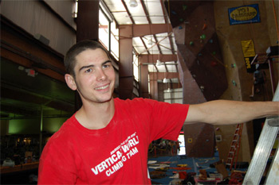

|
e-Grips Routesetting Interview: Kyle McCabe 
eG: Kyle, you’re a youngin’ - been climbing less than ten years, right? How did you get into it?
KMC: My older sister took me to a local gym in southern NH as a belated birthday gift. Shortly thereafter, I met a good friend of mine Steve Buck who became my coach in 2002.
eG: So you began competing in the US Youth Circuit soon after you began climbing, and got to some international events as well. What were some standout moments in your youth competitive climbing career?
KMC: Traveling and meeting people were my favorite aspect of competing all over. Having the opportunity to train and compete with some of the best climbers in the world had its highlights. Seeing how hard climbers will try and train to do well was an eye opener. I knew that I worked hard, but after my first trip to Europe I had a new look on competitive rock climbing. The Euros were machines, the Russians were way fast and the US was trying as hard as we could to represent our slots.
eG: Coached by Steve Buck at a small gym called Boulder Morty’s up in New Hampshire, is Steve’s experience and that gym how you got into routesetting as well?
KMC: My good friend, "Bucky" is the biggest reason why I am anywhere in this industry. Having gone through all the steps, by his side, from competitor, to coach to finally to national route setter. I will always give Bucky the greatest thanks and respect for what he has helped me get through.
eG: So Hayseed - I know from working with you that you’ve made steps to advance as a setter through a ton of hard work and long, burly hours… volunteering at events, always willing to work hard - that grit has proven to be a key to your excelling as a setter I’m sure - what other skills have you learned from being involved in big events - any mentors you’ve learned from?
KMC: I have had the opportunity to work with the top setters in the country weather they are from the older generation, Steve Buck, Lance Hatfield and Tony Yaniro or from the new generation of setters, Kynan Waggoner, Jason Danforth and Mike Helt. These are just a few names that I have come to learn from and respect very much in the industry.
eG: You’ve set a bunch of top events. I remember we had a crazy time at 2007 ABS Regionals in Connecticut. You’ve apprenticed and had assistantships at USAC Youth Nationals, set numerous USAC Divisionals, and also got on board to help set the infamous NJ Gravity Brawl this year. Give us some stories of the best comps you’ve seen or been a part of! What do you learn from each new event?
KMC: Every year I see how rock competition are growing and changing. Seven years ago I stepped into my first JCCA onsight comp, amazed that events like this really happened, to now being asked to help set the top events across the country. Working with USAC and Ne2c I have seen many good competitions. Both organizations have their strong points and their weak angles. This past year, Adult Bouldering Nationals, set by Kynan Waggner and Crew, and the latest Mammut Bouldering Championship set by Jason Danforth and the Ne2c Disco Ninja Squad, of which I’m proud to be a Captain of, were the two most impressive rock comps in the US. Recent events I have had a part in: the past two Mammut events and upcoming OR Tradeshow Comp., many youth and adult USAC nationals 2005 to present. Each organization seems to be stepping it up a notch, weather it is more spectators, shipping in foreigners, or building the sick new walls to watch climbers flail on.
eG: Favorite hold types, setting style? What about e-Grips in particular? As a setter - do you have any favorites? What are essential for every setter’s hold inventory?
KMC: Learning early on that directional holds were easiest to tweak a problem I tend to still favor them with the occasional modifications to throw a curveball at all the mutants out there. I find myself grabbing more and more E-grips due to the fact I can tweak the holds very easy with the design of the shape and the material itself. Some people mention how slick a new hold feels, grind a little chalk with some grr to go with it and its like the cool granite we all seem to love to pull on in the fall months.
eG: So people out there might know you’ve established yourself as an experienced competition routesetter, but you’re also a young coach as well - right? Who have you helped along the way? Has coaching given you a unique perspective on routesetting? How so?
KMC: I feel a mixture of competing, coaching and setting have all helped to shape me into what I am today. Each one has made me able to do the other one smoother and more efficient. Bucky and I have had the opportunity to train some amazing athletes, every year proudly standing at the podium with the other top teams in the US. Some names that have worked hard under our watch, Francesca and Amelia Metcalf, Vasya and Nadya Vorotnikov, Ben Wisniewski, Keegan Cole, Brian Furciniti, Nicole Cassidy, and many more that have all been on their share of podiums.
eG: I know you are out n about climbing hard when you get the chance as well - sponsored by Wild Country and Red Chili, correct? What have you been up to lately on the real rock? Goals for the summer?
KMC: I climb a lot of trees! I am currently going to school for community forestry and in the process of starting up a tree care company. This summer I am stuck in a five month internship 50 miles west of my home. Having all this going on this summer it has been a challenge to enjoy the rocks. I do have a couple of cracks to try and squeeze my tips into at some hidden cliffs and a few more bolts to clip at Rumney before the season gets away from me. Otherwise my first trip to Bishop is in the workings for this fall.
eG: Thanks Kyle - good luck with your future climbing and setting career!
|